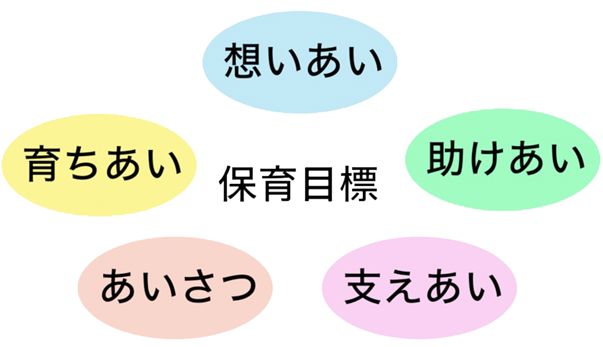
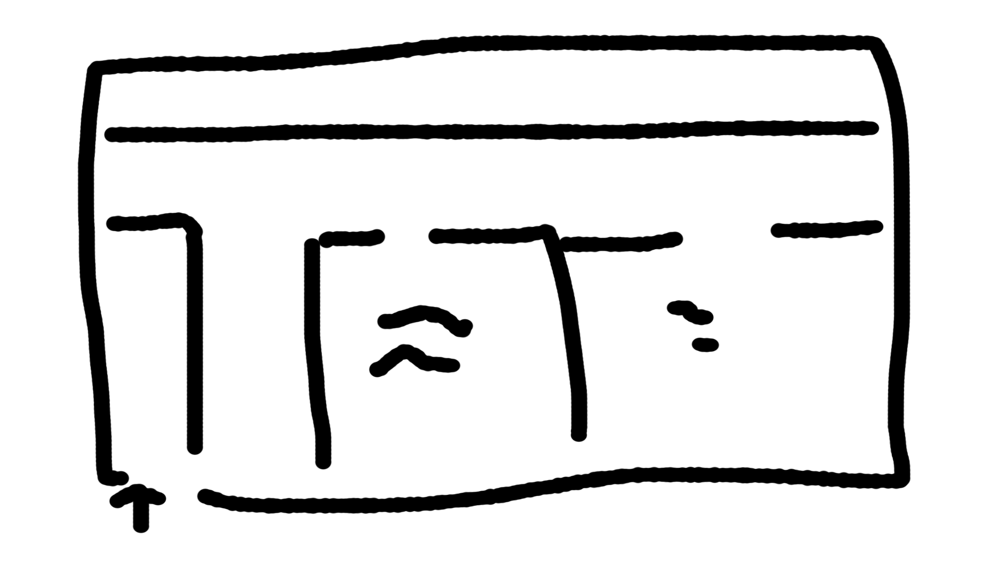

保育方針
- 子供一人一人の思いを受け止め、心豊かな子供を育てます。
- 家庭と園と一体となり子供の健全な心身の発達を目指します。
- 安全で安心のできる環境の構成と設備充実を図ります。
- 地域の子育てのニーズにお応えできるように取り組み行います。
園の概要
年齢・定員
０歳 6人
１歳 6人
２歳 7人
０歳 6人
１歳 6人
２歳 7人
| 開所時間 | |
|---|---|
| 平日 | 午前７：００〜午後７：００ |
| 土曜日 | 午前８：００〜午後６：００ |
| 基本時間（８時間） | |
|---|---|
| 平日 | 午前８：００〜午後４：００ |
| 土曜日 | 午前８：００〜午後４：００ |
延長保育
※月額の場合：各時間それぞれ３０００円/月
| 開所時間 | |
|---|---|
| 平日 | 午前７：００〜午前８：００ |
| 午後４：００〜午後７：００ | |
| 土曜日 | 午後４：００〜午後６：００ |
| 開所時間 | ||
|---|---|---|
| 平日 | ７：００〜８：００ | ２００円/日 |
| １６：００〜１７：３０ | ３００円/日 | |
| １７：３０〜１８：３０ | ２００円/日 | |
| １８：３０〜１９：００ | ２００円/日 | |
| 土曜日 | １６：００〜１７：３０ | ３００円/日 |
| １７：３０〜１８：００ | ２００円/日 | |
施設内観

園の見学について
園の見学は、随時受付けしています。
実際に保育の様子をご覧いただくことも出来ます。
希望される方は、事前にご連絡をお願いします。
(TEL:***-***-****)
施設内マップ
１階：

２階：
所在地
〒＊＊＊ー＊＊＊＊
岐阜県各務原市おがせ町９丁目２８０−３
ピース各務原保育園